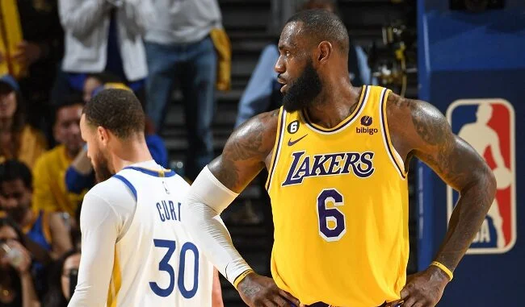

troca, aponta jornalista.
Astro já demonstrou desejo em vestir a camisa de Golden State e atuar ao lado de Stephen Curry
Por Victor Linjardi
Postado em 24 maio 2023 às 20:43
Fonte: Andrew D. Bernstein / AFP
Após a derrota do Los Angeles Lakers nas finais da Conferência Oeste, o futuro do principal astro da equipe começou a gerar dúvidas. Se por um lado LeBron James deixou a aposentadoria em aberto, por outro, Kevin O’Connor, do site The Ringer, aponta uma possível troca do veterano para o Golden State Warriors.
“O interesse entre LeBron e o Warriors pode ser mútuo. Ele é o melhor amigo de Draymond Green e já disse que Stephen Curry é o jogador da atualidade com quem ele mais gostaria de jogar. No ano passado, no programa The Shop, o parceiro de negócios de LeBron, Maverick Carter, o pressionou a admitir o time pelo qual ele mais gostaria de jogar além do Lakers. Como resposta, LeBron disse que seria o Warriors”, escreveu o jornalista.
A única forma de LeBron James ir para o Golden State Warriors na offseason é por meio de uma troca. O time de San Francisco pode até ter peças necessárias para fazer o negócio funcionar. Para isso, será preciso centralizar o acordo em torno de Jordan Poole e Jonathan Kuminga, além de várias escolhas de Draft.